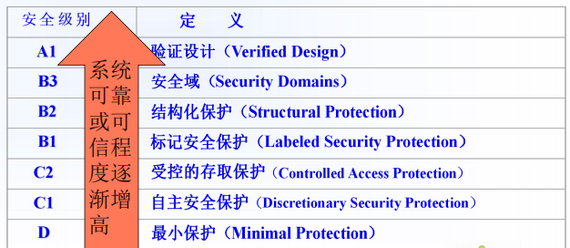
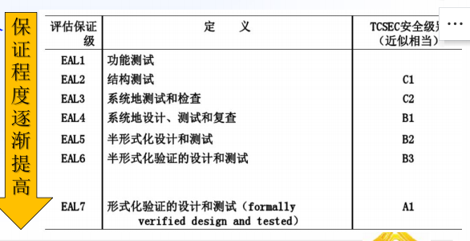
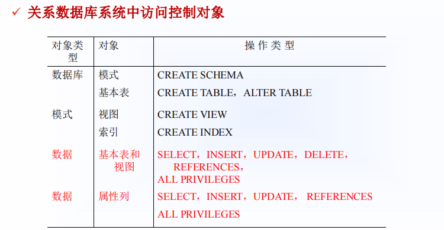
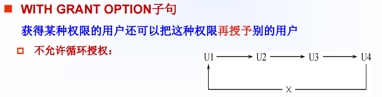
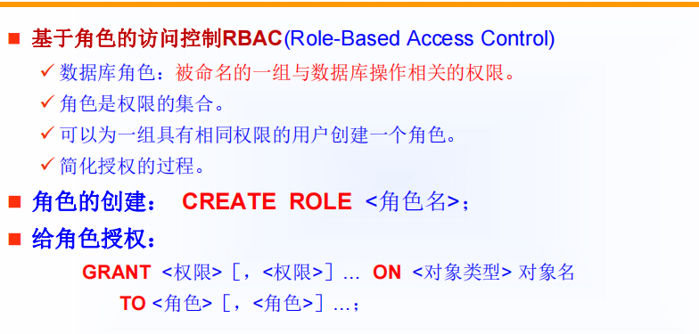
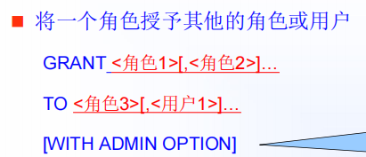
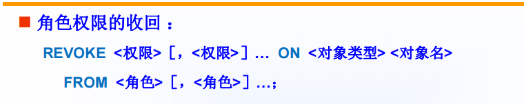
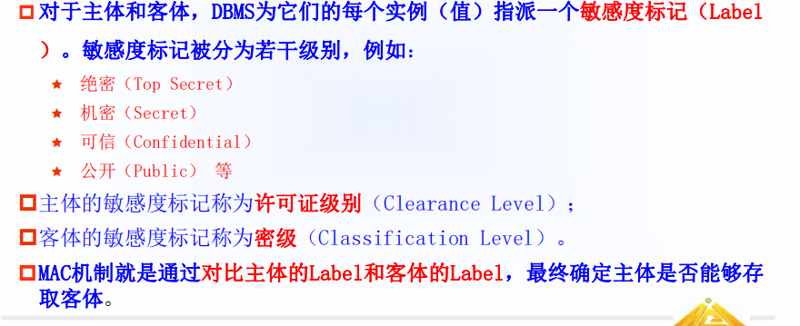
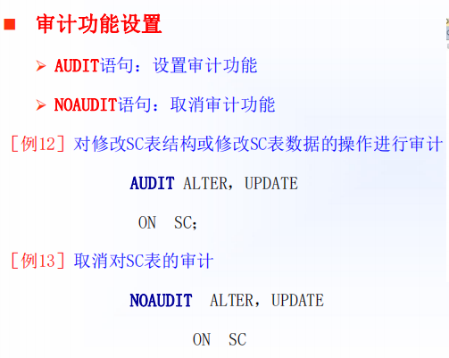

第四章 数据库安全性
[TOC]
4.1 数据库安全性概述
数据库不安全的因素
-
非授权用户对数据库的恶意存取和破坏
-
数据库中重要或铭感的数据被泄露
-
安全环境的脆弱性
TCSEC橘皮书
TCSEC/TDI 紫皮书：从四个方面来描述安全性级别划分的 指标，即安全策略、责任、保证和文档。
TCSEC/TDI安全级别划分如下图所示：

-
C2是安全产品的最低档次
CC评估保证级的划分:

4.2 数据库安全性控制
DBMS的安全机制
-
自主安全性机制–通过权限在用户之间传递，使用户自主管理数据库安全性
-
强制安全性机制–通过对数据和用户强制分类，使得不同类别用户能够访问不同类别的数据
-
推断控制机制
-
数据加密存储机制
4.2.1 用户身份鉴别
-
该种方法使系统提供的最外层安全保护措施
用户身份的鉴别方法
-
静态口令鉴别
-
动态口令鉴别
-
生物特征鉴别
-
智能卡鉴别
4.2.2 存取控制
-
数据库安全性所关心的主要是DBMS的存取控制机制
存取控制权限主要包括两个部分
-
定义用户权限
-
合法权限检查
-
用户权限定义和合法权限检查机制一起组成了DBMS的安全子系统
常用的存取控制方法
-
自主存取控制（DAC，C2,灵活）: grant 和 revoke语句实现
-
强制存取控制（MAC,B1，严格）

授予权限
1 | GRANT <权限>[,<权限>]... |

回收权限
1 | REVOKE <权限>[,<权限>]... |
注意:
-
用户可以自主地决定将数据地存取权限授予任何人、决定是否也将授权地权限授予别人。这就是自主存取控制
4.2.5 数据库角色



4.2.6 强制存取控制方法
-
自主存取控制可能存在数据地无意泄露

强制存取控制规则
-
仅当主体的许可证级别大于或等于客体的密级时，该主体才能读取相应的客体
-
仅当主体的许可证级别等于客体的密级时，该主体才能写相应的客体。
4.3 视图机制
-
视图机制地主要功能在于提供数据独立性
4.4 审计
什么是审计
-
启用一个专用的审计日志（Audit Log），将用户对数据库的所有操作记录在上面；
-
DBA可以利用审计日志中的追踪信息，找出非法存取数据的人、时间和内容。（例如对失败的登录次数进行审计，某个数据库上的DDL语句进行审计，某个数据库表里面的delete语句进行审计）

4.5 数据加密
加密地方法主要有
-
存储加密
-
传输加密